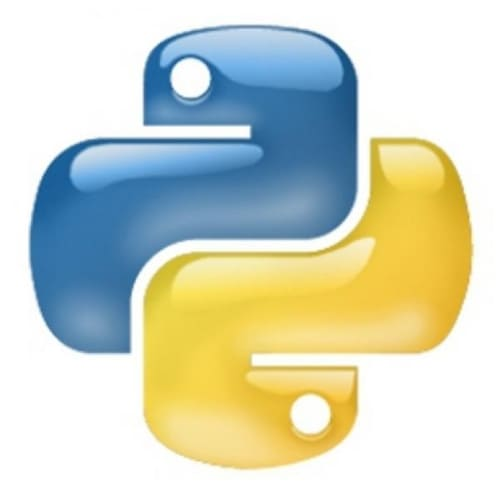

(клікнувши по мові - перейдете до її опису)


|
Рейтинг | Проголосовало | Логотип | |
|---|---|---|---|---|
| JavaScript | 67,7% | 60 930 | |
|
| HTML/CSS | 63,5% | 57 150 | |
|
| Python | 41,7% | 37 530 |  | |
| Java | 41,1% | 36 990 | |
|
| C# | 31,0% | 27 900 | |
|
 - динамічна, об'єктно-орієнтована прототипна мова програмування. Реалізація стандарту ECMAScript. Найчастіше використовується для створення сценаріїв вебсторінок, що надає можливість на боці клієнта (пристрої кінцевого користувача) взаємодіяти з користувачем, керувати браузером, асинхронно обмінюватися даними з сервером, змінювати
структуру та зовнішній вигляд вебсторінки.
- динамічна, об'єктно-орієнтована прототипна мова програмування. Реалізація стандарту ECMAScript. Найчастіше використовується для створення сценаріїв вебсторінок, що надає можливість на боці клієнта (пристрої кінцевого користувача) взаємодіяти з користувачем, керувати браузером, асинхронно обмінюватися даними з сервером, змінювати
структуру та зовнішній вигляд вебсторінки.
JavaScript класифікують як прототипну (підмножина об'єктно-орієнтованої), скриптову мову програмування з динамічною типізацією. Окрім прототипної, JavaScript також частково підтримує інші парадигми програмування (імперативну та частково функціональну) і деякі відповідні архітектурні властивості, зокрема: динамічна та слабка типізація, автоматичне керування пам'яттю, прототипне наслідування, функції як об'єкти першого класу.
 (англ. HyperText Markup Language — мова розмітки гіпертексту) — це мова тегів, засобами якої здійсюється розмічання веб-сторінок для мережі Інтернет. Веб-браузери отримують HTML-документи з веб-сервера або з локальної пам'яті й передають документи в мультимедійні веб-сторінки. HTML описує структуру веб-сторінки семантично і спочатку включені сигнали для зовнішнього вигляду документа.
(англ. HyperText Markup Language — мова розмітки гіпертексту) — це мова тегів, засобами якої здійсюється розмічання веб-сторінок для мережі Інтернет. Веб-браузери отримують HTML-документи з веб-сервера або з локальної пам'яті й передають документи в мультимедійні веб-сторінки. HTML описує структуру веб-сторінки семантично і спочатку включені сигнали для зовнішнього вигляду документа.
 (англ. Cascading Style Sheets, укр. Каскадні таблиці стилів) — це спеціальна мова стилю сторінок, що використовується для опису їхнього зовнішнього вигляду. Самі ж сторінки написані мовами розмітки даних.
CSS є основною технологією всесвітньої павутини, поряд із HTML та JavaScript. Найчастіше CSS використовують для візуальної презентації сторінок, написаних HTML та XHTML, але формат CSS може застосовуватися до інших видів XML-документів.
(англ. Cascading Style Sheets, укр. Каскадні таблиці стилів) — це спеціальна мова стилю сторінок, що використовується для опису їхнього зовнішнього вигляду. Самі ж сторінки написані мовами розмітки даних.
CSS є основною технологією всесвітньої павутини, поряд із HTML та JavaScript. Найчастіше CSS використовують для візуальної презентації сторінок, написаних HTML та XHTML, але формат CSS може застосовуватися до інших видів XML-документів.
 (найчастіше вживане прочитання — «Па́йтон», запозичено назву з британського шоу Монті Пайтон) — інтерпретована об'єктно-орієнтована мова програмування високого рівня зі строгою динамічною типізацією. Розроблена в 1990 році Гвідо ван Россумом. Структури даних високого рівня разом із динамічною семантикою та динамічним зв'язуванням роблять її привабливою для швидкої розробки програм, а також як засіб поєднування наявних компонентів. Python підтримує модулі та пакети модулів, що сприяє модульності та повторному використанню коду. Інтерпретатор Python та стандартні бібліотеки доступні як у скомпільованій, так і у вихідній формі на всіх основних платформах. В мові програмування Python підтримується кілька парадигм програмування, зокрема: об'єктно-орієнтована, процедурна, функціональна та аспектно-орієнтована.
(найчастіше вживане прочитання — «Па́йтон», запозичено назву з британського шоу Монті Пайтон) — інтерпретована об'єктно-орієнтована мова програмування високого рівня зі строгою динамічною типізацією. Розроблена в 1990 році Гвідо ван Россумом. Структури даних високого рівня разом із динамічною семантикою та динамічним зв'язуванням роблять її привабливою для швидкої розробки програм, а також як засіб поєднування наявних компонентів. Python підтримує модулі та пакети модулів, що сприяє модульності та повторному використанню коду. Інтерпретатор Python та стандартні бібліотеки доступні як у скомпільованій, так і у вихідній формі на всіх основних платформах. В мові програмування Python підтримується кілька парадигм програмування, зокрема: об'єктно-орієнтована, процедурна, функціональна та аспектно-орієнтована.
 (вимовляється Джава) — об'єктно-орієнтована мова програмування, випущена 1995 року компанією «Sun Microsystems» як основний компонент платформи Java. З 2009 року мовою займається компанія «Oracle», яка того року придбала «Sun Microsystems». В офіційній реалізації Java-програми компілюються у байт-код, який при виконанні інтерпретується віртуальною машиною для конкретної платформи.
«Oracle» надає компілятор Java та віртуальну машину Java, які задовольняють специфікації Java Community Process, під ліцензією GNU General Public License.
(вимовляється Джава) — об'єктно-орієнтована мова програмування, випущена 1995 року компанією «Sun Microsystems» як основний компонент платформи Java. З 2009 року мовою займається компанія «Oracle», яка того року придбала «Sun Microsystems». В офіційній реалізації Java-програми компілюються у байт-код, який при виконанні інтерпретується віртуальною машиною для конкретної платформи.
«Oracle» надає компілятор Java та віртуальну машину Java, які задовольняють специфікації Java Community Process, під ліцензією GNU General Public License.
 (вимовляється Сі-шарп) — об'єктно-орієнтована мова програмування з безпечною системою типізації для платформи .NET. Розроблена Андерсом Гейлсбергом, Скотом Вілтамутом та Пітером Гольде під егідою Microsoft Research (належить Microsoft).
Синтаксис C# близький до С++ і Java. Мова має строгу статичну типізацію, підтримує поліморфізм, перевантаження операторів, вказівники на функції-члени класів, атрибути, події, властивості, винятки, коментарі у форматі XML. Перейнявши багато від своїх попередників — мов С++, Object Pascal, Модула і Smalltalk — С#, спираючись на практику їхнього використання, виключає деякі моделі, що зарекомендували себе як проблематичні при розробці програмних систем, наприклад, мова С#, на відміну від C++, не передбачає множинне успадкування класів.
(вимовляється Сі-шарп) — об'єктно-орієнтована мова програмування з безпечною системою типізації для платформи .NET. Розроблена Андерсом Гейлсбергом, Скотом Вілтамутом та Пітером Гольде під егідою Microsoft Research (належить Microsoft).
Синтаксис C# близький до С++ і Java. Мова має строгу статичну типізацію, підтримує поліморфізм, перевантаження операторів, вказівники на функції-члени класів, атрибути, події, властивості, винятки, коментарі у форматі XML. Перейнявши багато від своїх попередників — мов С++, Object Pascal, Модула і Smalltalk — С#, спираючись на практику їхнього використання, виключає деякі моделі, що зарекомендували себе як проблематичні при розробці програмних систем, наприклад, мова С#, на відміну від C++, не передбачає множинне успадкування класів.